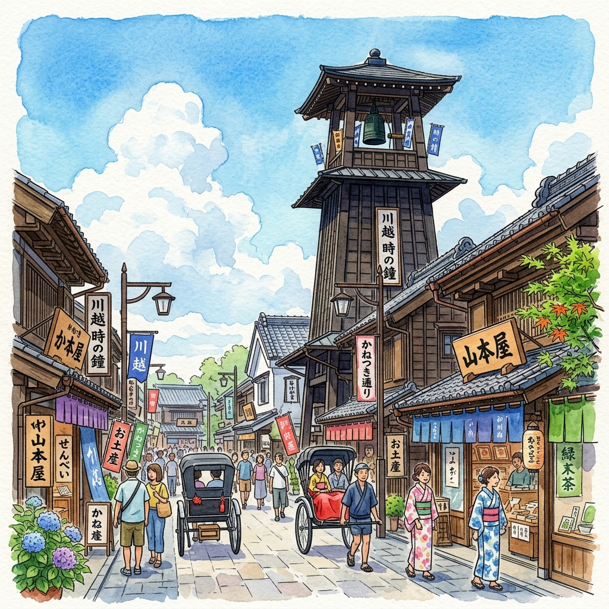

🗓️ 每日詳細行程
7月3日 (五) ➔ 抵達東京·羽田入住
出關、領取行李約 45–90 分鐘。通關步驟：
- 在機上提前完成 Visit Japan Web 入境填報（掃描二維碼）
- 入境審查：出示護照及 QR Code，預計等候 15-30 分鐘
- 領取行李 → 通過海關申報（選擇綠色通道）
- 出閘後前往 JR 東日本旅行服務中心購買 Welcome Suica (免押金)
Haneda Tokyo
West Wing
JAL 旗下精品酒店，毗鄰羽田機場。以「空港日式旅館」為主題，融合現代設計與日式傳統美學。晚抵東京後不用轉車，步行或乘免費接駁直達，適合帶著孩子疲憊入住。
| 接駁班次 | 23:05 / 23:55（最後班次）在 T3 出閘後跟指示牌到達巴士站 |
| 酒店地址 | 東京都大田區羽田空港3-5-10 / 03-5756-8800 |
| 退房時間 | 12:00 (7/4 早上退房搬往池袋酒店) |
在 T3 出閘口附近跟隨「Hotel JAL City」指示牌找到免費接駁巴士站。車程約 10-15 分鐘。若錯過末班車可在的士排隊處叫車，費用約 ¥1,000。入住後好好休息，迎接明天的池袋冒險！
7月4日 (六) ➔ 池袋動漫與溫泉日
池袋旗艦店
全球最大型的動漫周邊商品旗艦店！整棟大樓開滿了各式動漫商品、展覽和聯名專櫃。兒子最心儀的鬼滅之刃手辦和限量周邊在這裡非常齊全。
| 營業時間 | 10:00–21:00 (週末/假期) / 11:00–21:00 (平日) |
| 地址/電話 | 東京都豊島區東池袋1-20-7 / 03-3988-1351 |

專為 Sanrio 粉絲設計的夢幻咖啡廳。提供玉桂狗 (Cinnamoroll) 主題拿鐵、漢堡及布丁。女兒看見一定會尖叫的網紅打卡位！
| 營業時間 | 10:00–20:00 (L.O. 19:30) |
| 消費預算 | 人均約 ¥1,000–¥2,000 |
1. 陽光水族館 (Sunshine Aquarium) ★★★★☆
位於 Sunshine City 頂樓，以「天空綠洲」為概念，可以看見企鵝在您頭頂的透明水槽中游動。門票：成人 ¥2,500，中小學生 ¥1,300。
2. 陽光60展望台 (TENBOU-PARK) ★★★★☆
全新裝修的室內草地展望台，可以俯瞰東京全景，天氣好時還能遠眺富士山。非常適合帶孩子進去一邊喝飲料一邊休息。
3. 無敵家拉麵 (Mutekiya) ★★★★★
池袋最出名的濃郁豚骨拉麵店。因為不設分店，長期大排長龍。建議在下午 3-4 點非用餐高峰時間前往，避開排隊人潮。
7月5日 (日) ➔ 彌撒 + 寶可夢與秋葉原
⛪ 星期日主日彌撒指引
為方便一家人參與彌撒，我們推薦以下兩家天主教堂：
• 彌撒時間：日語 09:30 / 英語 12:00 (推薦正午英文彌撒)
• 交通：從池袋酒店步行約 15 分鐘，或乘的士約 5 分鐘。
• 彌撒時間：日語 10:00 / 英語 12:00 / 中文 13:30 (每週時間可能有調整)
• 交通：池袋地鐵丸之內線直達「四谷站」(約15分鐘)，教堂就在出口旁。

位於高島屋東館。擁有全日本最震撼的巨型寶可夢模型，包括卡比獸與皮卡丘。兒子買卡牌、公仔的終極聖地！
| 營業時間 | 10:30–21:00 |
| 地址/電話 | 東京都中央區日本橋2-11-2 高島屋S.C.東館5F |

動漫文化的心臟地帶。出站即可看見 **Radio Kaikan (收音機會館)**，整棟樓開滿了手辦、卡牌和玩具專賣店。兒子一定能找到他最愛的鬼滅之刃限量周邊。
1. 神田明神 (Kanda Myojin Shrine) ★★★★☆
秋葉原附近的千年歷史神社。與許多動漫（如鬼滅之刃、LoveLive）有聯名合作，連神社的繪馬和御守都是動漫造型，非常特別。
2. Yodobashi Akiba (友都八喜巨型電器城) ★★★★★
位於秋葉原站東口，擁有巨大的扭蛋玩具區和兒童玩具樓層。累了還可以去 8 樓的美食街用餐，有各式咖哩和拉麵，非常適合家庭。
3. 六厘舍沾麵 (Rokurinsha) ★★★★☆
位於東京站地下的「拉麵街」，以極其濃郁的魚介豚骨沾麵著稱，深受香港遊客喜愛。
7月6日 (一) ➔ 川越小江戶古街日

被稱為「小江戶」的歷史街區。保留了大量日本江戶時代的黑色木造倉庫建築，地標「時之鐘」依然每日鳴鐘。非常適合全家人換上輕便的**浴衣 (Yukata)** 散步拍照。
每年 7 月初開展，神社內會懸掛超過 2,000 個五彩繽紛的手工玻璃風鈴。微風吹過鈴聲清脆，晚上還會有點燈儀式，宛如動漫鬼滅之刃中的夏祭場景，千萬不要錯過！
1. 喜多院 (Kitain Temple) ★★★★☆
保留了江戶城部分遺跡的古老寺廟，庭院內有著名的五百羅漢雕塑。春天櫻花和秋天楓葉很有名，夏日則十分幽靜。
2. 川越熊野神社 (Kumano Shrine) ★★★★☆
以「開運、洗錢」聞名的神社。院內設有一條碎石健康步道（赤腳走），還有獨特的八咫烏神籤，孩子們會覺得很好玩。
3. 小川菊鰻魚飯 (Ogakiku) ★★★★★
川越擁有二百年歷史的鰻魚飯老店，用古法炭火慢烤，入口即化。因為太受歡迎，建議一到川越就先去拿號碼牌。
7月7日 (二) ➔ 水族館與台場夜景

結合現代聲光投影技術的超人氣市內水族館。最矚目的是伴隨音樂、水幕與炫彩燈光的 **海豚表演秀 (Dolphin Show)**。全館位於室內，冷氣開放，非常適合炎熱的 7 月天。
| 門票價格 | 成人 ¥2,500 / 中小學生 ¥1,300 / 兒童 (4歲以上) ¥800 |
| 溫馨提示 | 海豚秀前排座位會被淋濕，建議購買雨衣 (¥100) 或坐後排。 |

位於 DiverCity 商場廣場，1:1 等身比例的 Unicorn Gundam。每日定時會有「毀滅模式」變身演出（晚上配合牆面投影更震撼）。商場內有 Gundam Base 旗艦店和各種動漫品牌。
• 白天變身：11:00, 13:00, 15:00, 17:00 (僅頭部變形)
• 晚上變身 (配合大螢幕)：19:00 - 21:30 (每30分鐘一場，有不同影片主題)
1. 台場一丁目商店街 (DECKS Tokyo Beach) ★★★★☆
位於 DECKS 商場 4 樓，完全重現了日本昭和時代 (上世紀 60-70 年代) 的復古街景。有古早味柑仔店、投幣式復古遊戲機和鬼屋，小孩子會覺得非常新奇。
2. 樂高探索中心 (LEGOLAND Discovery Center) ★★★★☆
室內樂高積木主題樂園，有 4D 電影院、樂高拼砌區和射擊遊戲。如果遇到下雨天，這是一個完美的備用景點。
3. Bills 鬆餅 (Bills Odaiba) ★★★★★
位於 DECKS 3 樓，被譽為「世界第一的早餐鬆餅」。臨窗座位可以直面 Rainbow Bridge (彩虹大橋)，景色絕美，推薦招牌蜂蜜香蕉奶油鬆餅。
7月8日 (三) ➔ 補貨與回港
若計劃前往川崎 Costco 買零食/保健品，請提早叫的士前往。若想行程輕鬆，可留在酒店 (Haneda) 周邊的 Life 超市或藥妝店作最後衝刺。
搭乘酒店接駁巴士或的士 (約 10 分鐘) 直達航廈。辦理行李託運後，在機場免稅店買伴手禮（白色戀人、Royce 朱古力等），乘機回港。
🧳 行前與每日清單
點選打勾，狀態會自動記錄在您的手機中 (刷新或關網頁也不會消失)！
✈️ 出發前必備物品
🌡️ 7月防暑必備 (非常重要)
🛍️ 媽媽的購物清單 (藥妝與鞋)
🚆 交通指南
💳 Welcome Suica 購買與使用
外國遊客專用卡特點：
1. **無押金**：不需要扣除 ¥500，餘額可全數用來乘車或在超商消費。
2. **28天有效期**：過期後卡內**餘額不能退還**，請在最後一天於機場免稅店將餘額刷完。
3. **👧 8歲女兒辦 Child Suica (半價卡)**：乘車和巴士均自動半價。必須在羽田機場 JR 東日本旅行服務中心出示護照以確認年齡購買。
🧳 攜帶 3 大行李乘車與的士叫車政策
1. JR山手線及普通地鐵行李政策：
無須像新幹線一樣預約行李位，所有大行李均可免費攜帶上車。但請**務必避開平日通勤高峰時間 (07:30–09:00)**，否則地鐵內擁擠，拖行李會極為不便。
2. 搬酒店日的最佳安排 (7/4 早上)：
羽田機場 JAL City ➔ 池袋 Super Hotel。由於有 3 件大行李和 2 個孩子，**強烈建議直接搭乘的士 (或叫 Uber Premier Van)**。車程約 40 分鐘，費用約 ¥10,000–¥12,000，能省去轉車、拖行李上下樓梯的痛苦。
🚇 簡化版東京地鐵與山手線路線圖
🧸 動漫與購物指南
⚡ Pokémon Center TOKYO DX (日本橋)
日本面積最大、裝潢最精緻的寶可夢中心。門口迎客的巨型卡比獸與皮卡丘是極佳的拍照點。
寶可夢咖啡廳就位於 DX 店旁。由於咖啡廳不設現場排隊，**必須 100% 提前預約**。若沒有預約到，可以到旁邊的特別專區購買外帶的造型點心。
👦 鬼滅之刃手辦與卡牌購物貼士
1. **Animate 池袋旗艦店 (二樓)**：設有極大的鬼滅之刃專區，漫畫、鑰匙圈、徽章等周邊最齊全。
2. **秋葉原 Radio Kaikan (收音機會館)**：出站即達。整棟樓聚集了數十家手辦二手機及卡牌專賣店（如 AmiAmi、K-BOOKS）。建議在這裡貨比三家，可以淘到許多絕版或特價的鬼滅模型。
🐈 女兒最愛：Mofusand & Sanrio
1. **東京站一番街 (Tokyo Character Street)**：設有 **Mofusand 專賣店 (mofusand もふにゃん本舗)** 以及大耳狗/三麗鷗專賣店，一站式買齊女兒心儀的角色公仔和文具。
2. **池袋 Sanrio Cafe**：位於陽光城，主打卡通造型的甜品和咖啡拉花，精緻又好玩。
💡 實用旅遊資訊
💸 信用卡消費攻略 (HSBC Red vs RBC)
🏪 7-Eleven ATM 提取日元現金教學
日本許多地鐵加值機、小吃店和部分神社**只收現金**。日元不夠時可在任何一間 7-Eleven 提款：
- 將開通了海外功能的香港/加拿大提款卡插入 ATM 機。
- 屏幕會自動識別並顯示繁體中文/英文界面。
- 選擇「提款」➔ 賬戶類型選「儲蓄賬戶 (Savings)」。
- 輸入卡片密碼，並輸入所需提取的日元金額。
- ⚠️ **最重要一步**：當系統問您要以「當地貨幣 (Yen)」還是「本國貨幣 (CAD/HKD)」結算時，**請務必選擇「Yen (日元)」**！若選本國貨幣，會被收取高達 4-8% 的 DCC 匯率差價。
🌡️ 7月東京防暑提醒
東京 7 月白日氣溫常達 34-36°C，且濕度極高。帶孩子旅遊時：
✓ 確保每人有一部手持風扇。
✓ 白天多安排水族館、商場等室內冷氣充足的景點。
✓ 隨身攜帶保溫瓶，在便利店買冰水或運動飲料補充電解質，防範中暑。